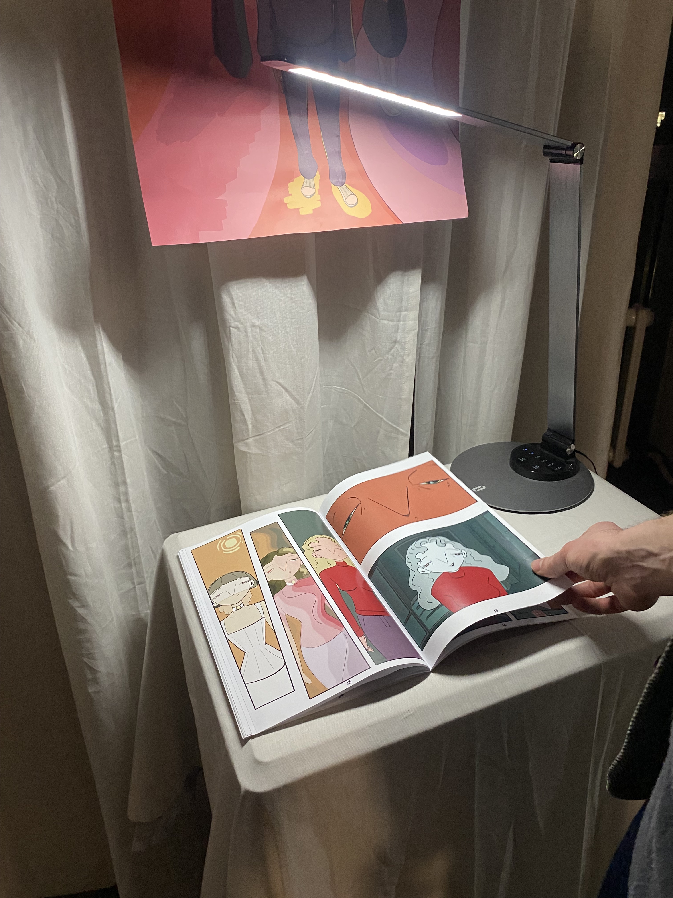
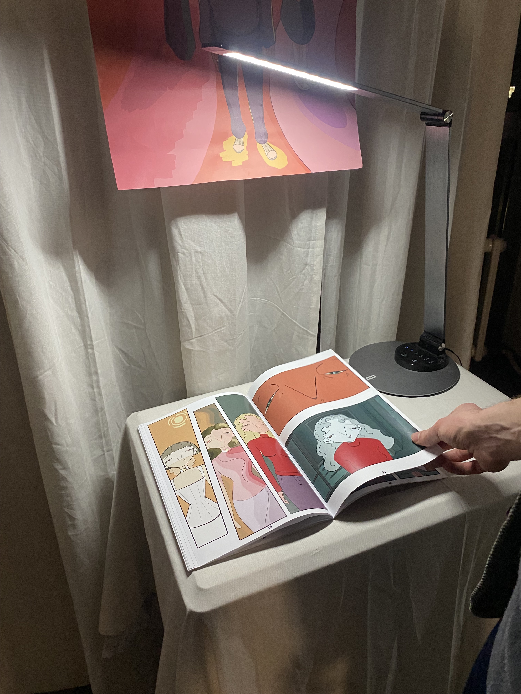
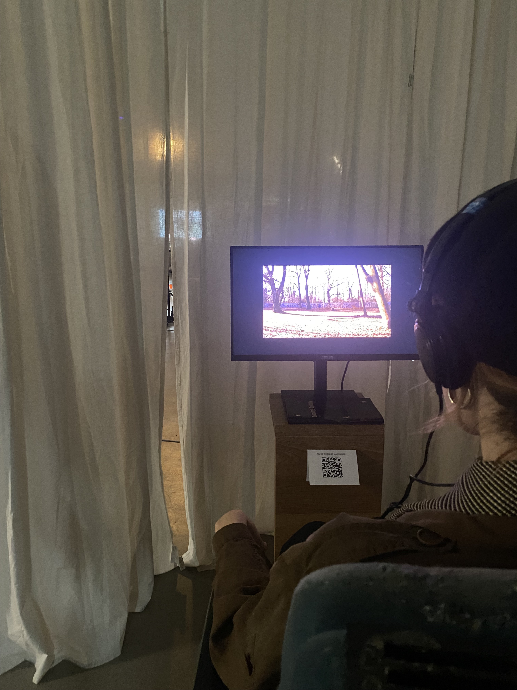
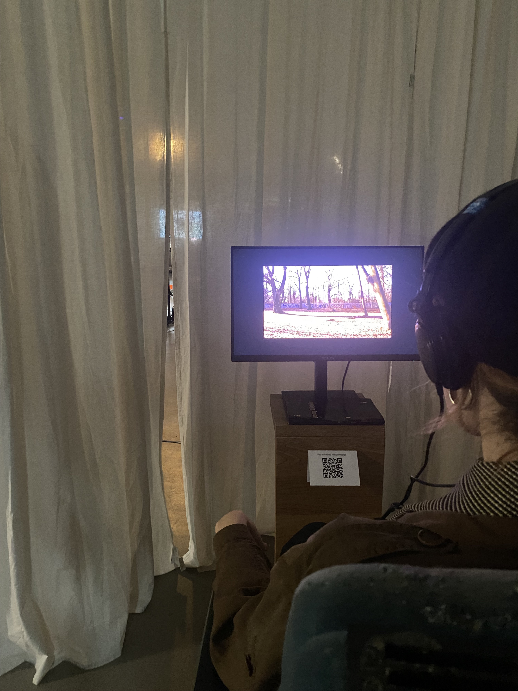
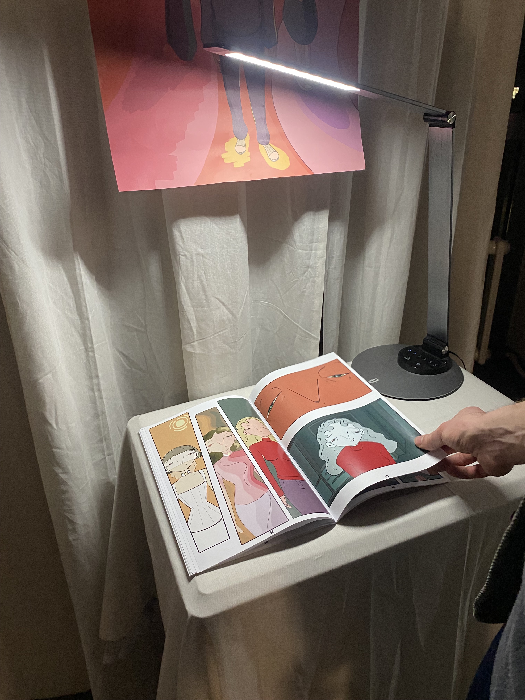
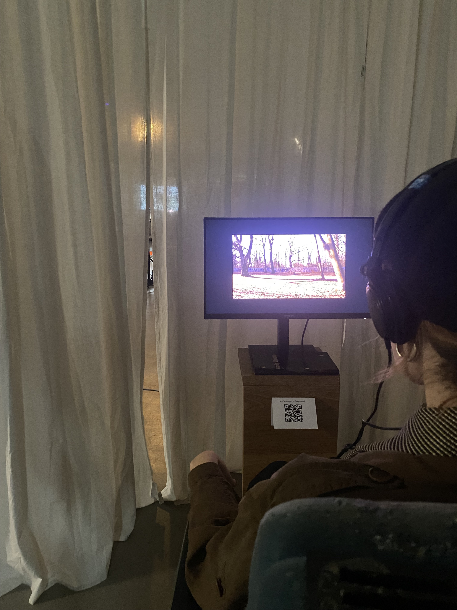

Dreaming & Digitality - Group Submission, Su Durakbasa, Maximilian Molitor & Lilli Grube - 2024
“Once Zhuang Zhou dreamt he was a butterfly, fluttering about joyfully just as a butterfly would. He followed his whims exactly as he liked and knew nothing about Zhuang Zhou. Suddenly he awoke, and there he was, the startled Zhuang Zhou in the flesh. He did not know if Zhou had been dreaming he was a butterfly, or if a butterfly was now dreaming it was Zhou.” (Ziporyn, 2009, p. 69)
With these words Zhuangzu captured a, for our group, central question of what reality is and how dream world differs from other ‘non-real’ worlds such as the digital realm. We saw ourselves confronted with the question of what is real and what is not, as we explore with the example of both dreams and digital realities in social media apps such as instagram, or similar. Take the example of ‘doom-scrolling’, a bad habit of endlessly scrolling for content and forgetting the outside world for a short amount of time, for example (Searles & Feezell, 2023). We can, similarly to the Zhuang Zhou in his poem, forget about our real shape and real surroundings and believe we are something else in a different environment for a specific amount of time. If this is the case, then inhowfar are dream-realities, realities which we sometimes think are real, different from digital worlds, in which we can sometimes lose ourselves in too? Are dreams and digital worlds similar in some metaphysical, or ontological sense? And what parallels can we find between these two worlds? These are the questions we attempted to come closer to answering by executing four separate but connected parts of our project under the umbrella term, and the whole project, dreaming & digitality.
In the following, I will briefly explain what each part is, what it consists of, and how it is connected to our main research question, RQ1: inhowfar are dream-world and digital-world similar?
Given the number of different parts realised under the umbrella project dreaming & digitality, the following diagram (Figure 2) shall give the reader a overview of the structure of dreaming & digitality with its’ subprojects

With these words Zhuangzu captured a, for our group, central question of what reality is and how dream world differs from other ‘non-real’ worlds such as the digital realm. We saw ourselves confronted with the question of what is real and what is not, as we explore with the example of both dreams and digital realities in social media apps such as instagram, or similar. Take the example of ‘doom-scrolling’, a bad habit of endlessly scrolling for content and forgetting the outside world for a short amount of time, for example (Searles & Feezell, 2023). We can, similarly to the Zhuang Zhou in his poem, forget about our real shape and real surroundings and believe we are something else in a different environment for a specific amount of time. If this is the case, then inhowfar are dream-realities, realities which we sometimes think are real, different from digital worlds, in which we can sometimes lose ourselves in too? Are dreams and digital worlds similar in some metaphysical, or ontological sense? And what parallels can we find between these two worlds? These are the questions we attempted to come closer to answering by executing four separate but connected parts of our project under the umbrella term, and the whole project, dreaming & digitality.
In the following, I will briefly explain what each part is, what it consists of, and how it is connected to our main research question, RQ1: inhowfar are dream-world and digital-world similar?
Given the number of different parts realised under the umbrella project dreaming & digitality, the following diagram (Figure 2) shall give the reader a overview of the structure of dreaming & digitality with its’ subprojects
Figure 1: the structure of Dreaming & Digitality.
Inhaltlich-konzeptionelle Beschreibung des Projekts
The first part of dreaming & digitality, is a short-movie titled awake, in which a protagonist wakes up in her bed, feeling slightly confused, and reaches for her phone, intending to check for the time. As she does this, she gets caught in the instagram app and ends up doomscrolling and losing track of the real world. The camera pans into the reels, the short-clips the protagonist scrolls through on instagram, so far that the edges of the phone are no longer visible. After three very bizarre and disconnected video clips that merge into each other via fast switches of the camera direction, the video clips start to flow into each other more and more, with a final clip of the moon ending the clip. In the final exhibition setup (see part 3), the movie starts again.

Part 1 focussed on the similarity of experience, mainly the visual modality, between dream and digitality. We are thinking of the visual experience of dreams in the way that Eric Schwitzgebel, for example, describes dreams in ‘1% Skepticism’ (2017) in an essay on why he is 99% confident that he is not dreaming in a moment, but still is about 1% unsure. He bases his insecurity on the ‘detailed sensory experience in multiple modalities’ he is experiencing, noting how in dreams one typically sees things in the same way one would imagine things: blurry, sketchy, sparse in details. He is 99% certain because he can remember how he got to his current position, referencing Descartes’ observation that in dreams memory and perception are sometimes discontinuous and segmented (Descartes, 1641). Descartes further notes that the visual contents of dreams as ‘bizarre’. Thus, Schwitzgebel and Descartes identify the visual experiences of dreams as blurry, sketchy, sparse in details, bizarre, and I am sure the reader of this document can think of other ‘dream-markes’ that makes it possible for them to identify a dream i retrospect, such as the inability to see faces, or the dysfunction of light-switches, as anecdotal examples. In combination with Descartes’ observation of the discontinuity and segmentation of experiences in dream, we drew a conceptual parallel between experiences in dreams and the experience of scrolling through social media, particularly in doom-scrolling. We can list concretely which properties of the visual experiences in dreams and in doom scrolling, in social-media-spaces, are similar. In the following, we will go through this list. First, experiences in dreams are, as Descartes describes, discontinuous and segmented, short threads of an activity take place in dreams, and suddenly end, and the situation, or the experience changes to a completely different one, without it being noted as strange or unnormal. We want to note, that we do not postulate that all experiences in dreams are like this, it may be the case that dreams follow one causal chain of events, or one string of events (‘roter Faden’ in German) throughout the whole dream, but mostly we observe a discontinuity of events to be the case in our own dreams, as well as Descartes’ observations (1641). Secondly, the question of how far the content of our dreams connects to our subconscious, perhaps this could be viewed as a Freudian perspective (e.g. Freud, 2022), could also be extended to contents viewed on social media. Inhowfar does your instagram-feed for example, represent certain aspects of unconscious tendencies. Third, the loss of consciousness, and critical thinking, with Morale during dreaming or doomscrolling but also connected to this point, the feeling of ‘waking-up’ from a dream or a session of doomscrolling.
Awake worked with innovative technical tools in order to realize the visual flowing into each other of scenes in order to mimik both the visual experiences one has in dreams and the experience of swiping up from one video to the next ones’ phone. The latter was achieved via a fast movement of the camera into the direction of the succeeding scene, and the former via the use of stable diffusion image to video generation.
This part of the project was realized by Lilli Grube and Maximilian Molitor.
Figure 2: A screenshot of the short movie.
Part 1 focussed on the similarity of experience, mainly the visual modality, between dream and digitality. We are thinking of the visual experience of dreams in the way that Eric Schwitzgebel, for example, describes dreams in ‘1% Skepticism’ (2017) in an essay on why he is 99% confident that he is not dreaming in a moment, but still is about 1% unsure. He bases his insecurity on the ‘detailed sensory experience in multiple modalities’ he is experiencing, noting how in dreams one typically sees things in the same way one would imagine things: blurry, sketchy, sparse in details. He is 99% certain because he can remember how he got to his current position, referencing Descartes’ observation that in dreams memory and perception are sometimes discontinuous and segmented (Descartes, 1641). Descartes further notes that the visual contents of dreams as ‘bizarre’. Thus, Schwitzgebel and Descartes identify the visual experiences of dreams as blurry, sketchy, sparse in details, bizarre, and I am sure the reader of this document can think of other ‘dream-markes’ that makes it possible for them to identify a dream i retrospect, such as the inability to see faces, or the dysfunction of light-switches, as anecdotal examples. In combination with Descartes’ observation of the discontinuity and segmentation of experiences in dream, we drew a conceptual parallel between experiences in dreams and the experience of scrolling through social media, particularly in doom-scrolling. We can list concretely which properties of the visual experiences in dreams and in doom scrolling, in social-media-spaces, are similar. In the following, we will go through this list. First, experiences in dreams are, as Descartes describes, discontinuous and segmented, short threads of an activity take place in dreams, and suddenly end, and the situation, or the experience changes to a completely different one, without it being noted as strange or unnormal. We want to note, that we do not postulate that all experiences in dreams are like this, it may be the case that dreams follow one causal chain of events, or one string of events (‘roter Faden’ in German) throughout the whole dream, but mostly we observe a discontinuity of events to be the case in our own dreams, as well as Descartes’ observations (1641). Secondly, the question of how far the content of our dreams connects to our subconscious, perhaps this could be viewed as a Freudian perspective (e.g. Freud, 2022), could also be extended to contents viewed on social media. Inhowfar does your instagram-feed for example, represent certain aspects of unconscious tendencies. Third, the loss of consciousness, and critical thinking, with Morale during dreaming or doomscrolling but also connected to this point, the feeling of ‘waking-up’ from a dream or a session of doomscrolling.
Awake worked with innovative technical tools in order to realize the visual flowing into each other of scenes in order to mimik both the visual experiences one has in dreams and the experience of swiping up from one video to the next ones’ phone. The latter was achieved via a fast movement of the camera into the direction of the succeeding scene, and the former via the use of stable diffusion image to video generation.
This part of the project was realized by Lilli Grube and Maximilian Molitor.
The second part of dreaming & digitality, consists of two sub-projects which are in themselves again connected. The first subproject of part 2 (part 2a) is a comic titled ‘somnio ergo sum’ in which a protagonist is caught in a difficult relationship. The protagonist finds himself in a daily grind of work, dullness and the feeling of not being cherished by his wife, amid her accusations of him cheating on her. The protagonist, a man in his 40s with a wife and a child, finds himself in a difficult relationship for sometime and therefore he keeps dreaming about his wife cheating on him. One day, during their weekly dinner date he decides to tell her about these dreams of her cheating and him feeling insecure in the relationship. The wife gets very offensive and they get into a fight, leading the men to storm off from the house and go for a drive to cool off his mind. During his drive, he comes very close to having a car accident and from there the viewer switches into an alternate storyline. Here, the man meets a new woman after the accident and they start a relationship that ends up in a marriage. Suddenly, the man wakes up in a hospital bed with his former wife beside him. It is then understood that he actually had a car accident and has been in a coma dreaming about an alternate reality. He gets very depressed about the situation and reassesses his feelings from the dream with the other woman, ending in him wanting to break up with his wife. The storyline is created to emphasise the effect dreams might have on real life experiences. This is realised by the man already having relationship problems and having recurring dreams of being deceived and in the end meeting an alternative person that truly makes him happy although it is dream reality. He wakes still affected by the experiences and feelings he has in the dream state resulting in him taking action in his relationship with his wife. To represent the mundanity, stuckness to monotinity and routine and the unability to take action in real life is represented by a monochrome grey-green color palette. The dream sequences on the other hand is multi-colored displaying the open-endedness, freedom and clarity of mind in the dream world. The transition from the real world to dream state and vice versa is simply represented by changes in color palettes and nothing more to have a fluid transition in between. After the man wakes up from his coma, the multi-colored palette of the dream world and the monochrom color palatte of the real world are used together to represent the effect of the dream state on the man’s decision making continues and in place. Overall, the comic book strip is thought as an engaging visual tool to represent a though experiment to the audience.
The second subproject of part 2 (part 2b) is a philosophical thought experiment titled ‘How could I treat dream feelings’, which starts with telling the story in ‘somnio ergo sum’ and uses that story as a thought experiment to aid the reader in imagining the case, followed by a philosophical argumentation with a proposal of how one could deal with real feelings resulting from dreams. It thus attempts to answer the question which the comic throws up: how could one deal with real feelings resulting from, at first glance, fake or non-real experiences one dreams in dreams, like the protagonist in ‘somnio ergo sum’? First, the philosophical argumentation touches on what emotions are, noting an ontological difference between emotions stemming from real events and imagined ones, and drawing a parallel to Gregory who defines dream experiences as sensory imaginations rather than false percepts (Gregory, 2023). Gregory defines sensory imaginations as experiences that are identical to the experiences we have in certain modality (visual, auditory, haptic, etc.) when we imagine something while awake, for example, when we imagine being on a beach when we are actually in a seminar while awake. In contrast he defines false percepts as experiences that result when our perceptions are tricking us, for example when we are hallucinating while on drugs. He brings forth roughly 4 arguments to support his view. First, a phenomenological similarity does not imply a similarity of kinds. Second, that dreaming of a phone ringing does not wake you, the person who is experiencing the dream, up, and if it were you the dreamer hallucinating it wouldn’t be so. Rather dreams are similar to how you can imagine hearing a loud sound, such as a fighter jet breaking the sound barrier without having to cover your ears. Third, that dreams can often be identified in retrospect, as they aren’t as detailed as hallucinations, rather they are sketchy, with us often not being able to remember exact details, such as the exact facial features of our dream characters, if it were a hallucination it wouldn’t be like that, he argues. Lastly, Gregory cites empirical evidence, for a correlation of the neuronal structures that are involved in dreaming and imagination, with people who have lesions in those areas, not being able to do both (Solms & Turnbull, 2018). Ofcourse it is relevant to note that Gregory argues against other philosophers such as Ichikawa (2019) and Windt (2015) who hold the position that dreams are false percepts (and that these positions also exist).
The thought experiment builds on Gregory’s conclusion that dream experiences are similar in kind to sensory imaginations, such that emotions resulting from dream experiences are similar in kind to emotion stemming from sensory imaginations we can also experience while being awake. Assuming we take on this position, the essay concludes that dream-feelings are not anymore so critical, as we deal with emotions resulting from our imaginations pretty often during our daily life, for example we can imagine how it would be if we would jump off of a very high bridge, when we are standing right by the ledge, and this imagination actually leads to very real fear. It suggests that we have no difficulty in dealing with these feelings as we can attribute them to our imaginations as their source and know that imagination is not reality. In conclusion, the difficulties to deal with dream-feelings may partly stem from mysteriousness concerning their meaning and connections to our real life and from the lack of clear scientific explanations for dreams. And most importantly, from the fact that we sometimes believe they are real while we are in a dream (dream scepticism, e.g. see Schwitzgebel who is not sure if he is not dreaming, 2017), which is unlike imagining, as we know that or we can “check” if we have another real perception in order to identify an imagination as an imagination and not as reality.
This second part of the project was realized with the comic by Su Durakbasa and the thought experiment by Maximilian Molitor.
The second subproject of part 2 (part 2b) is a philosophical thought experiment titled ‘How could I treat dream feelings’, which starts with telling the story in ‘somnio ergo sum’ and uses that story as a thought experiment to aid the reader in imagining the case, followed by a philosophical argumentation with a proposal of how one could deal with real feelings resulting from dreams. It thus attempts to answer the question which the comic throws up: how could one deal with real feelings resulting from, at first glance, fake or non-real experiences one dreams in dreams, like the protagonist in ‘somnio ergo sum’? First, the philosophical argumentation touches on what emotions are, noting an ontological difference between emotions stemming from real events and imagined ones, and drawing a parallel to Gregory who defines dream experiences as sensory imaginations rather than false percepts (Gregory, 2023). Gregory defines sensory imaginations as experiences that are identical to the experiences we have in certain modality (visual, auditory, haptic, etc.) when we imagine something while awake, for example, when we imagine being on a beach when we are actually in a seminar while awake. In contrast he defines false percepts as experiences that result when our perceptions are tricking us, for example when we are hallucinating while on drugs. He brings forth roughly 4 arguments to support his view. First, a phenomenological similarity does not imply a similarity of kinds. Second, that dreaming of a phone ringing does not wake you, the person who is experiencing the dream, up, and if it were you the dreamer hallucinating it wouldn’t be so. Rather dreams are similar to how you can imagine hearing a loud sound, such as a fighter jet breaking the sound barrier without having to cover your ears. Third, that dreams can often be identified in retrospect, as they aren’t as detailed as hallucinations, rather they are sketchy, with us often not being able to remember exact details, such as the exact facial features of our dream characters, if it were a hallucination it wouldn’t be like that, he argues. Lastly, Gregory cites empirical evidence, for a correlation of the neuronal structures that are involved in dreaming and imagination, with people who have lesions in those areas, not being able to do both (Solms & Turnbull, 2018). Ofcourse it is relevant to note that Gregory argues against other philosophers such as Ichikawa (2019) and Windt (2015) who hold the position that dreams are false percepts (and that these positions also exist).
The thought experiment builds on Gregory’s conclusion that dream experiences are similar in kind to sensory imaginations, such that emotions resulting from dream experiences are similar in kind to emotion stemming from sensory imaginations we can also experience while being awake. Assuming we take on this position, the essay concludes that dream-feelings are not anymore so critical, as we deal with emotions resulting from our imaginations pretty often during our daily life, for example we can imagine how it would be if we would jump off of a very high bridge, when we are standing right by the ledge, and this imagination actually leads to very real fear. It suggests that we have no difficulty in dealing with these feelings as we can attribute them to our imaginations as their source and know that imagination is not reality. In conclusion, the difficulties to deal with dream-feelings may partly stem from mysteriousness concerning their meaning and connections to our real life and from the lack of clear scientific explanations for dreams. And most importantly, from the fact that we sometimes believe they are real while we are in a dream (dream scepticism, e.g. see Schwitzgebel who is not sure if he is not dreaming, 2017), which is unlike imagining, as we know that or we can “check” if we have another real perception in order to identify an imagination as an imagination and not as reality.
This second part of the project was realized with the comic by Su Durakbasa and the thought experiment by Maximilian Molitor.
The third part of dreaming & digitality, consists of the final exhibition construction, in which the short movie and the comic were presented in a physical form in a circular veil (part 3a; see Figure 1) at the final studio exhibition and a magazine providing background information on all parts of dreaming & digitality (part 3b). In the inside of the veil, a single cinema chair was positioned in front of a screen showing the short moving in loop. At the side of the cinema chair, the magazine was positioned providing information on the process of shooting the movie, information on the neurobiology of dreaming, as well as further philosophical background on methods of finding out if one is dreaming, regarding the second part of dreaming & digitality. On the outside of the veil, was positioned the comic ‘somnio ergo sum’ along with the thought experiment ‘how could I deal with dream feelings’, on a pedestal with appropriate reading light. This third part of the project was realised by the full team of dreaming & digitality, Su Durakbasa, Maximilian Molitor and Lilli Grube.
 

 

The final exhibition construction can be seen as a part of ‘Dreaming & Digitality’ by itself because it is another artistic processing of the question of RQ1, inhowfar dream and digital world are similar. The construction emphasises an interior perspective, inside the veil, which is separate from the perspective outside of the veil, that we can switch from one perspective to the other through the transition through a semipermeable membrane, which is not completely blocking the view to the outside world, but which is filled with content that is only visible to the subject inside the veil. As an analogy to the human mind, the veil represents the barrier between mind and the outside world, with thoughts, imaginations and dreams happening inside which are private to the outside world. A viewer of the exhibition can also find solace and privacy inside the veil, if he or she needs a break from the social overtaxation of the exhibition on the outside, and is purposefully invited to doomscroll in a reference to part 1, entering a deeper layer of social seclusion. The project is, as a whole, both critical and positive to the social seclusion aspects of both dreams and social-media and other digital worlds. Part 1, awake, emphasizes the aspect of being trapped in a loop of consuming social media, not being able to access the outside world, being depressed and objects of one’s bad habits trapped by the inability to change, whereas in Part 2, in ‘somnio ergo sum’ dreams and digital worlds can act as safe-havens in which one can escape the dull daily life, and open perspectives towards better ways of living, exploring one's' own deep wishes. The dichotomy of dreams and social media, is omnipresent is the world, with, for example, the increased interconnectedness of people via social media bringing many advantages, such as increased productivity, being able to connect with people who are far away and new cultures and spaces in digital domain opening, but also disadvantages, such as an increase in mental illnesses worldwide, social anxiety, phone addiction and new possibilities of companies being able to mine data and influence commercial behaviour.


Figures 3 - 5: images of the final exhibition.
The final exhibition construction can be seen as a part of ‘Dreaming & Digitality’ by itself because it is another artistic processing of the question of RQ1, inhowfar dream and digital world are similar. The construction emphasises an interior perspective, inside the veil, which is separate from the perspective outside of the veil, that we can switch from one perspective to the other through the transition through a semipermeable membrane, which is not completely blocking the view to the outside world, but which is filled with content that is only visible to the subject inside the veil. As an analogy to the human mind, the veil represents the barrier between mind and the outside world, with thoughts, imaginations and dreams happening inside which are private to the outside world. A viewer of the exhibition can also find solace and privacy inside the veil, if he or she needs a break from the social overtaxation of the exhibition on the outside, and is purposefully invited to doomscroll in a reference to part 1, entering a deeper layer of social seclusion. The project is, as a whole, both critical and positive to the social seclusion aspects of both dreams and social-media and other digital worlds. Part 1, awake, emphasizes the aspect of being trapped in a loop of consuming social media, not being able to access the outside world, being depressed and objects of one’s bad habits trapped by the inability to change, whereas in Part 2, in ‘somnio ergo sum’ dreams and digital worlds can act as safe-havens in which one can escape the dull daily life, and open perspectives towards better ways of living, exploring one's' own deep wishes. The dichotomy of dreams and social media, is omnipresent is the world, with, for example, the increased interconnectedness of people via social media bringing many advantages, such as increased productivity, being able to connect with people who are far away and new cultures and spaces in digital domain opening, but also disadvantages, such as an increase in mental illnesses worldwide, social anxiety, phone addiction and new possibilities of companies being able to mine data and influence commercial behaviour.
Arbeitsprozess und Reflexion
Under the comprehensive topic of dreaming and digitality three different project parts emerged. The work process for creating them began with collectively discussing the paper “Imagining a Way out of Dream Scepticism” by Gregory (2023). To question how we are supposed to treat emotions derived from dreams, Maximilian Molitor created a thought experiment which Su illustrated as a comic. This began with Su and Max first conceptually discussing how our dreams affect us, and then focussing more closely on the case of how emotions that we have from dreams as ‘non-real’ experiences can affect us.
Deriving from the question if dreams and digital worlds are similar in some metaphysical, or ontological sense Maximilian Molitor and Lilli Grube worked together to find a medium that would be able to visualise this comparison. Dreams are primarily a visual experience, comparable in perception to film as a medium, as both involve our senses. This early sparked a desire to work with video recordings. Both when watching a film and when dreaming, there is a role of a passive observer who absorbs the information presented in the images without physically moving, merely as a perceptible object. Given that films are viewed on screens, the medium seemed fitting to explore social media or doomscrolling in particular. Reels, with their short posts and seemingly disjointed sequence, resemble a film without context or narrative. This digital reality, through the concatenation of mundane, absurd, and sometimes frightening content, resembles the sequences of a surreal dream. Simultaneously, both the reels suggested to an individual and the dreams they have are based on the subconscious processing of certain themes.
From this comparison arose the hypothesis that dreams and doomscrolling depict a comparable alternative reality and, despite being perceived as unreal, have an impact on human emotions.
First part of the practical work on the short film was a collaborative script development to establish a foundational framework for the project. We then crafted more detailed scene descriptions to guide our filming process, drawing inspiration from current reel trends on Instagram, as well as from common collected dreams and our own dream experiences. With a comprehensive scene list in hand, we borrowed a camera from InKüLe and commenced filming the scenes in a random order, ensuring to capture all envisioned sequences. Once all scenes were recorded, we proceeded to assemble and edit them, initially following the predetermined sequence but remaining flexible to make adjustments for narrative coherence. To infuse a dreamlike quality into the film, we utilised screenshots from the video recordings and applied Stable Diffusion to create Image to Video animations. Following the editing phase, we focused on colour grading to enhance visual consistency and appeal. Additionally, we integrated music composed by Tizian Thieringer to complement the visuals and evoke the desired atmosphere.
For the exhibition we rejoined our group of three and created sketches of a possible set - up. With the vision of an isolated area to watch the short film and read both the comic, the thought experiment and the magazine the final exhibition set - up came to be.
Our aim was to address the questions inhowfar are dream-realities, realities which we sometimes think are real, different from digital worlds, in which we can sometimes lose ourselves in too and if dreams and digital worlds are similar in some metaphysical, or ontological sense in three parts. The resulting works reflect our subjective understanding and our collaborative approach. Despite various efforts to interpret, explain, and understand them in general, dreams remain a phenomenon not fully explained. Our philosophical-artistic approach offers a new perspective on this subject and parallels it with the digital world.
Deriving from the question if dreams and digital worlds are similar in some metaphysical, or ontological sense Maximilian Molitor and Lilli Grube worked together to find a medium that would be able to visualise this comparison. Dreams are primarily a visual experience, comparable in perception to film as a medium, as both involve our senses. This early sparked a desire to work with video recordings. Both when watching a film and when dreaming, there is a role of a passive observer who absorbs the information presented in the images without physically moving, merely as a perceptible object. Given that films are viewed on screens, the medium seemed fitting to explore social media or doomscrolling in particular. Reels, with their short posts and seemingly disjointed sequence, resemble a film without context or narrative. This digital reality, through the concatenation of mundane, absurd, and sometimes frightening content, resembles the sequences of a surreal dream. Simultaneously, both the reels suggested to an individual and the dreams they have are based on the subconscious processing of certain themes.
From this comparison arose the hypothesis that dreams and doomscrolling depict a comparable alternative reality and, despite being perceived as unreal, have an impact on human emotions.
First part of the practical work on the short film was a collaborative script development to establish a foundational framework for the project. We then crafted more detailed scene descriptions to guide our filming process, drawing inspiration from current reel trends on Instagram, as well as from common collected dreams and our own dream experiences. With a comprehensive scene list in hand, we borrowed a camera from InKüLe and commenced filming the scenes in a random order, ensuring to capture all envisioned sequences. Once all scenes were recorded, we proceeded to assemble and edit them, initially following the predetermined sequence but remaining flexible to make adjustments for narrative coherence. To infuse a dreamlike quality into the film, we utilised screenshots from the video recordings and applied Stable Diffusion to create Image to Video animations. Following the editing phase, we focused on colour grading to enhance visual consistency and appeal. Additionally, we integrated music composed by Tizian Thieringer to complement the visuals and evoke the desired atmosphere.
For the exhibition we rejoined our group of three and created sketches of a possible set - up. With the vision of an isolated area to watch the short film and read both the comic, the thought experiment and the magazine the final exhibition set - up came to be.
Our aim was to address the questions inhowfar are dream-realities, realities which we sometimes think are real, different from digital worlds, in which we can sometimes lose ourselves in too and if dreams and digital worlds are similar in some metaphysical, or ontological sense in three parts. The resulting works reflect our subjective understanding and our collaborative approach. Despite various efforts to interpret, explain, and understand them in general, dreams remain a phenomenon not fully explained. Our philosophical-artistic approach offers a new perspective on this subject and parallels it with the digital world.
Outlook
A possible continuation of the project could involve processing all dream sequences with Stable Diffusion, resulting in an even more surreal image. To further immerse the viewer in the narrative, it could also be conceivable to reshoot the film with 360-degree footage and play it through VR goggles. This would enhance the sense of an alternative reality for the viewer.
In conclusion, and concerning our RQ1, inhowfar are dream-world and digital-world similar, we can sum up that both dream world and digital world pose an alternative reality in comparison to the real, physical world. On one hand both worlds can act a possibilities to escape the real world, in order to seek new experiences, or imagine different worlds, sometime purposefully, consciously, as in the case of a lucid dream, or a VR-world, a video game, or social media in the case of the digital world. Sometimes these experiences take ahold of our senses, and our consciousness, for example, in most dreams we do not notice that we are dreaming until the end, we are not aware of the fact, we just perceive, similarly if we doomscroll we also just perceive, but do not think critically, we just scroll until the we snap out of it, but most of the time, at least in my case, we have not noticed how much time has passed until this point in time. Thus, dreams and digital-worlds alike also have negative aspects. Further, the visual experience of dreaming and digitality are comparable, both theoretically and in the final product of our project in part 1 - nevertheless it is something to be judged by the beholder of the project
In conclusion, and concerning our RQ1, inhowfar are dream-world and digital-world similar, we can sum up that both dream world and digital world pose an alternative reality in comparison to the real, physical world. On one hand both worlds can act a possibilities to escape the real world, in order to seek new experiences, or imagine different worlds, sometime purposefully, consciously, as in the case of a lucid dream, or a VR-world, a video game, or social media in the case of the digital world. Sometimes these experiences take ahold of our senses, and our consciousness, for example, in most dreams we do not notice that we are dreaming until the end, we are not aware of the fact, we just perceive, similarly if we doomscroll we also just perceive, but do not think critically, we just scroll until the we snap out of it, but most of the time, at least in my case, we have not noticed how much time has passed until this point in time. Thus, dreams and digital-worlds alike also have negative aspects. Further, the visual experience of dreaming and digitality are comparable, both theoretically and in the final product of our project in part 1 - nevertheless it is something to be judged by the beholder of the project
References
Descartes, R. (1641/1984). Meditations on first philosophy. In The philosophical writings of Descartes, trans. J. Cottingham, R. Stoothoff, and D. Murdoch. Cambridge: Cambridge.
Freud, S. (2022). The interpretation of dreams. DigiCat.
Gregory, D. (2023). Imagining a Way Out of Dream Skepticism. Erkenntnis, 1-18.
Ichikawa, J. (2009). ‘Dreaming and imagination’. Mind & Language, 24, 103–121.
Schwitzgebel, E. (2017). 1% Skepticism. Noûs, 51(2), 271-290.
Searles, K., & Feezell, J. T. (2023). Scrollability: A New Digital News Affordance. Political Communication, 40(5), 670–675. https://doi.org/10.1080/10584609.2023.2208083
Solms, M., & Turnbull, O. (2018). The brain and the inner world: An introduction to the neuroscience of subjective experience. Routledge.
Windt, J. M. (2015). Dreaming: A conceptual framework for philosophy of mind and empirical research. MIT Press.
Ziporyn B. (2009), trans. Zhuangzi: The Essential Writings with Selections from Traditional Commentaries. Indianapolis: Hackett Publishing.
Freud, S. (2022). The interpretation of dreams. DigiCat.
Gregory, D. (2023). Imagining a Way Out of Dream Skepticism. Erkenntnis, 1-18.
Ichikawa, J. (2009). ‘Dreaming and imagination’. Mind & Language, 24, 103–121.
Schwitzgebel, E. (2017). 1% Skepticism. Noûs, 51(2), 271-290.
Searles, K., & Feezell, J. T. (2023). Scrollability: A New Digital News Affordance. Political Communication, 40(5), 670–675. https://doi.org/10.1080/10584609.2023.2208083
Solms, M., & Turnbull, O. (2018). The brain and the inner world: An introduction to the neuroscience of subjective experience. Routledge.
Windt, J. M. (2015). Dreaming: A conceptual framework for philosophy of mind and empirical research. MIT Press.
Ziporyn B. (2009), trans. Zhuangzi: The Essential Writings with Selections from Traditional Commentaries. Indianapolis: Hackett Publishing.